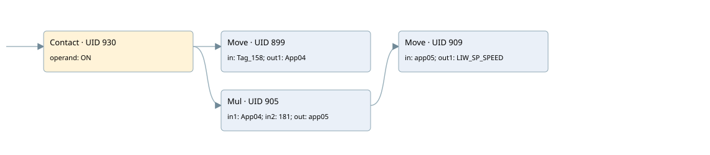

send output to perifery
analog output conversion · 검색 색인 순서 13 · 원본 내부 NID 추정 16
백업 PLF 원본의 3092424 바이트 위치에서 복원한 XML. 검색 문서 1691의 객체 키 16102200b166000000000000와 연결했다. 이름 해석 8/8개. 남은 RefId는 상수 또는 미해석 참조다.
연결 구조 다시 그리기
원본 Part/PCon/Wire를 이용한 연결도다. TIA 화면의 래더 배치 또는 실행 결과를 재현한 그림은 아니다. 핀 연결은 아래 표와 원본 XML을 기준으로 읽는다. 노드 위에 마우스를 두면 피연산자 이름을 볼 수 있다.

접점·코일·블록과 피연산자
| Part UID | Gate | Negated 핀 | 연결 피연산자 |
|---|---|---|---|
| 930 | Contact | operand = ON | |
| 899 | Move | in = Tag_158; out1 = App04 | |
| 905 | Mul | in1 = App04; in2 = 181; out = app05 | |
| 909 | Move | in = app05; out1 = LIW_SP_SPEED |
접점 경로를 펼친 조건식
Contact·O/A·비교기의 원본 연결을 읽기 쉽게 펼친 보조 해석이다. POWER는 전원 레일 시작을 뜻한다. 호출 블록·에지·타이머의 내부 동작과 다중 쓰기 순서는 이 표로 실행 검증하지 않았다. 미해석 핀과 RefId는 원문 연결표에서 확인한다.
| UID | 동작 | 대상 | 원본 접점 경로 | 내용 |
|---|---|---|---|---|
| 899 | Move | App04 | ON | Move 입력 Tag_158 |
| 909 | Move | LIW_SP_SPEED | Mul UID 905.eno (블록 동작 확인) | Move 입력 app05 |
원본 배선 연결
| Wire UID | 동일 Wire 연결 끝점 |
|---|---|
| 932 | Powerrail {} ↔ Part 930.in |
| 920 | ORef 912 (ON) ↔ Part 930.operand |
| 931 | Part 930.out ↔ Part 899.en ↔ Part 905.en |
| 921 | ORef 913 (Tag_158) ↔ Part 899.in |
| 922 | Part 899.out1 ↔ ORef 914 (App04) |
| 923 | ORef 915 (App04) ↔ Part 905.in1 |
| 924 | ORef 916 (181) ↔ Part 905.in2 |
| 926 | Part 905.eno ↔ Part 909.en |
| 925 | Part 905.out ↔ ORef 917 (app05) |
| 927 | ORef 918 (app05) ↔ Part 909.in |
| 928 | Part 909.out1 ↔ ORef 919 (LIW_SP_SPEED) |
식별자 해석 근거 8개
| ORef UID | RefId | 이름 | IdentXmlPart 파일 | 해석 방법 |
|---|---|---|---|---|
| 912 | 1 | ON | 0664-IdentXmlPart.xml | UID/RID + search-text + NID agreement |
| 913 | 93 | Tag_158 | 0664-IdentXmlPart.xml | UID/RID + search-text + NID agreement |
| 914 | 99 | App04 | 0663-IdentXmlPart.xml | UID/RID + search-text + NID agreement |
| 915 | 99 | App04 | 0663-IdentXmlPart.xml | UID/RID + search-text + NID agreement |
| 916 | 101 | 181 | 0661-IdentXmlPart.xml | literal candidate: UID/RID/NID + nearby named declarations + search-text agreement |
| 917 | 102 | app05 | 0663-IdentXmlPart.xml | UID/RID + search-text + NID agreement |
| 918 | 102 | app05 | 0663-IdentXmlPart.xml | UID/RID + search-text + NID agreement |
| 919 | 104 | LIW_SP_SPEED | 0664-IdentXmlPart.xml | UID/RID + search-text + NID agreement |
검색 코드 보조 자료
참조 명칭을 찾기 위한 자료이며 실행 순서나 AND/OR 관계는 위 연결표로 확인한다.
"on" move "tag_158" mul #app04 181 move #app05 #app05 "liw_sp_speed":p #app04